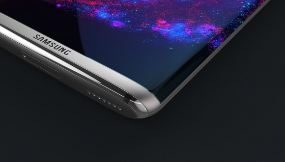
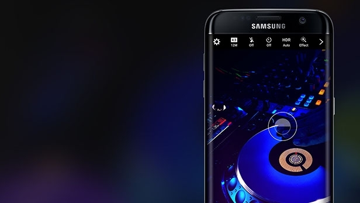

Samsung Galaxy S8 hakkında yeni detaylar
Samsung'un önümüzdeki yıl piyasaya çıkaracağı Galaxy S8 hakkında ortaya yeni iddialar atılıyor. Yeni amiral gemisinde bizi ne gibi yenilikler bekliyor?
Samsung, büyük umutlarla piyasaya sürdüğü fakat facia ile sonlandırılan Note 7’den sonra yaralarını sarmaya hazırlanıyor. Önümüzdeki yıl kullanıcıların karşısına Galaxy S8 ile çıkacak olan yetkililer, kullanıcıların güvenini yeniden kazanmayı hedefliyor.
Galaxy S8'de home tuşu kaldırılabilir!
Ortaya atılan söylentiye göre Samsung, yeni telefonunda home tuşunu kaldırarak parmak izi okuyucusunu telefonun arkasına taşımayı planlıyor. Şu anlık hali hazırda birkaç firma tarafından kullanılan bu tip parmak izi okuyucular, oldukça kullanışlı olduğundan dolayı kullanıcılara rahat bir kullanım sağlıyor.
Ortaya atılan diğer bir iddiada ise Samsung, yaşanan patlama olaylarından sonra üretimini durdurduğu ve piyasadan toplattığı Note 7’de, yer alan göz okuyucusunun Galaxy S8’de yer alması bekleniyor. Şöyle bir baktığımızda Samsung, Note 7 ile piyasa sunduğu birçok özelliği yeni amiral gemilerinde kullanması bekleniyor. Yani bu söylentinin gerçekleşmesi hiçte şaşırtıcı bir sonuç olmaz.